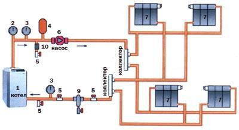

Установка газового котла
Сейчас все чаще в домах используют отопительные системы с использованием природного газа. Самым выгодным
вариантом для отопления частного дома считается газ. Правильная работа системы отопления заключается в
правильном монтаже газовых приборов и правильной разводке труб. Одним из главных плюсов газовых котлов
является экологичность, компактность и бесшумный процесс работы.
Хотите монтировать газовый котел и не знаете как? Вам нужен хороший специалист, кем я и являюсь, сантехник
Манас, с опытом работы в данной сфере не один год. Я смогу провести все работы качественно и в короткие
сроки. Не стесняйтесь обращаться за помощью ко мне, я всегда буду рядом и облегчу задачу по установке котла.
От мощности котельного агрегата зависит уровень обогрева. Газ применяется для газовых котлов и является
очень опасным веществом. К ассортименту этого устройства следует подходить максимально ответственно – это
касается и установки газового кочегарного оборудования, и соблюдения всех инструкций аппарата газовых
котлов. Я, сантехник Манас, смонтирую газовый котел, экономя вам время, и деньги.
Показатели классификации газовых котлов
Для отопления дома необходимо использовать одно контурные котлы, а если желаете кроме отопления еще
горячую воду, тогда понадобятся двухконтурные. По двухступенчатому основанию работают устройства
средней производительности, а по одноступенчатому применяется маломощное оборудование.
На вытяжной системе производит работу котёл замкнутого типа. Сегодня в наличии множество
разновидностей газовых колонок, имеющие естественную тягу. Установка газовых агрегатов в помещении
осуществляется путем монтажа непосредственно к стенке или полу. Для настенной установки используются
стальные теплообменники, а для напольного — чугунные или железные обменники.
Наиболее лучший выбор для дома, использование двухконтурной колонки, действующий на автомате и
имеющий бойлер. Таким образом, это помогает не только поддерживать тепло, но и согревать воду для
хозяйственных целей, мытья в душе и других подобных вещей.
Усовершенствованный автоматический механизм регулирования отопления, который охватывает двойной
термостат и микропроцессорную систему, намного облегчает процесс настройки оборудования. Он
позволяет при отсутствии людей контролировать температурный режим в доме и на улице. С помощью
программы можно снизить температуру нагрева на минимальное значение.
С какими правилами необходимо ознакомиться перед тем, как поставить котел в доме? При желании,
возможно самим поставить газовый котел. Сборку и подключение сложных систем проводят только
профессионалы, кем я и являюсь. Также есть некоторые условия к установке, они распространяются на
простую аппаратуру и ацетиленовые механизмы с ГВС.
При этом следует позаботиться о возможности отвода выхлопа в индивидуальный отвесный газоход.
Изделия горения минуют три колена трубы. При этом дымоход не превышает 3 метра. Отрезок трубы,
соединяющий котел и дымоход, не должен превышать 25 сантиметров.

Какие требования к помещению
В соответствии с требованиями, которые предъявляются к монтажу газовой установки, газовая установка
должна быть проведена в соответствии с ними. Нарушения в производительности газоиспользующего
оборудования могут повлечь за собой штрафные санкции от контролирующих органов. Газ — это топливо и
требует осторожности.
В кухне или в помещении, где есть система вытяжного отверстия, можно установить газовый котел. При
использовании газа в качестве топлива, нельзя использовать ванные комнаты, туалеты или другие места
общественного назначения.
Для маломощного одно контурного агрегата не требуется отдельная комната, его можно смонтировать в
любом месте. В кухне двухконтурный котел не предусмотрен.
В подвальном месте можно установить самый мощный газовый котел (150–360 кВт).
По правилам монтажа газовой колонки, чтобы разместить бойлерную, надо иметь площадь не меньше, чем
0,2 м3 на один киловатт установленной мощности агрегата при высоте кровли от двух метров и более.
Подходят только стены с противопожарной защитой не менее 0,75 ч. Для того чтобы наладить работу
приборов и данного агрегата, стоит создать нормальный подход к ним.
Для нормального освещения топочной следует сделать окно с форточкой. При выборе двери для котельной
необходимо учитывать ее ширину, не меньше 80 см.
Оставить внизу двери зазор или оборудовать вытяжной решеткой. В подвале, при установке котла,
необходимо предусмотреть проход на улицу.